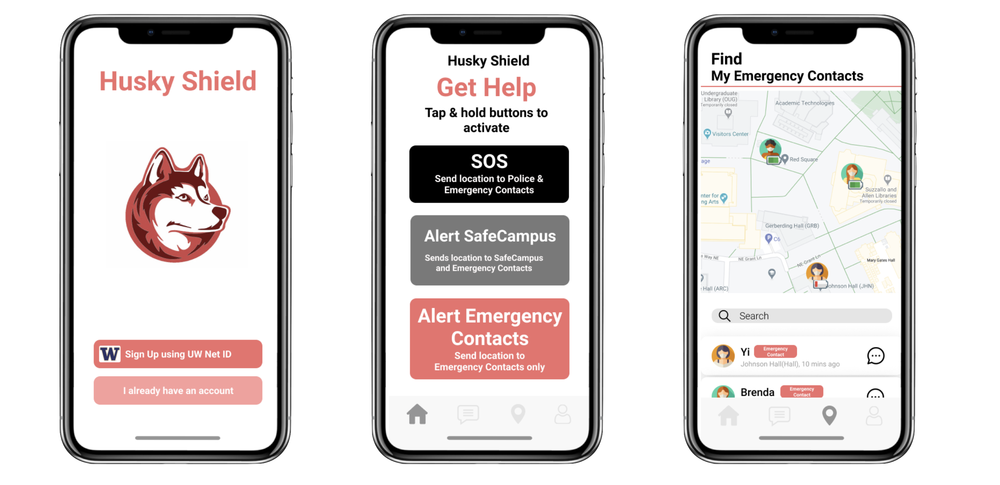

Husky Shield was a project that I worked on during my Freshman Year at UW, as a part of my Design Methods class (INFO 360) taught by Professor Jeremy Zaretzky. For this project, I worked with a team of 4 other students to create a solution to one of the United Nations Sustainable Development Goals (SDG). We decided to focus on the Gender Equality SDG, with an emphisis on Sexual Assault and Harassment.
Thinking about our own experiences at UW, we wanted to create a solution to help women and non-binary students feel safe while on campus. Currently, we found that a lot of students use a combination of location sharing and text messaging to communicate in potentially dangerous situations (first dates, late night walking home from the library, etc). These current solutions are not comprehensive enough to be truly effective in dangerous situations, so we wanted to address these very valid concerns within a single platform. Thus, Husky Shield was born.
Husky Shield is an app meant specifically for women and non-binary students at the University of Washington. The app aims to to help these students feel safe by enabling: